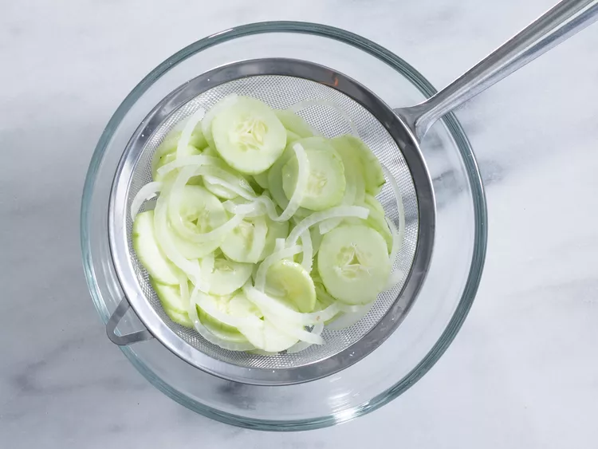
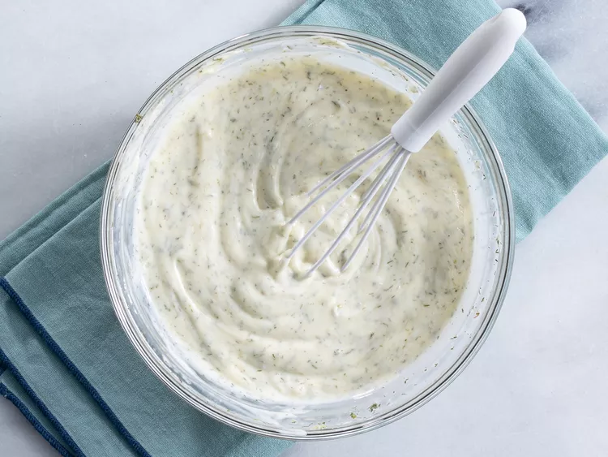
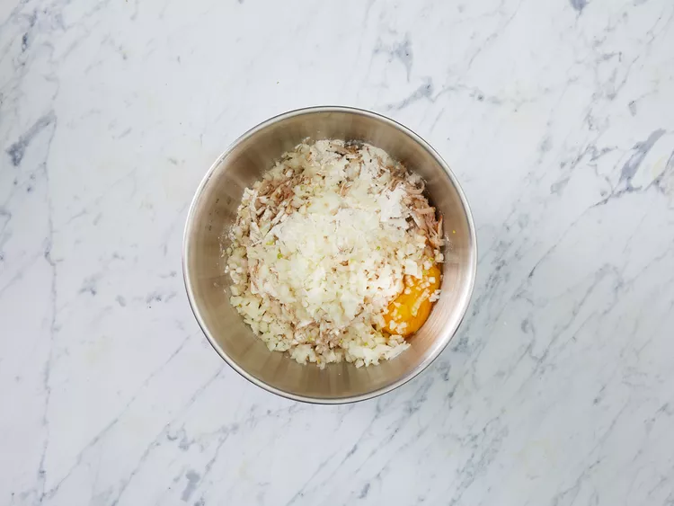
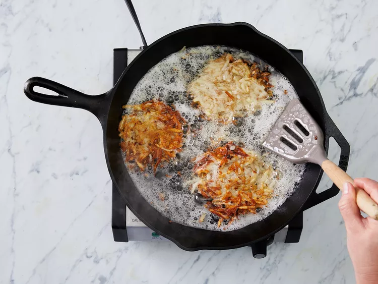
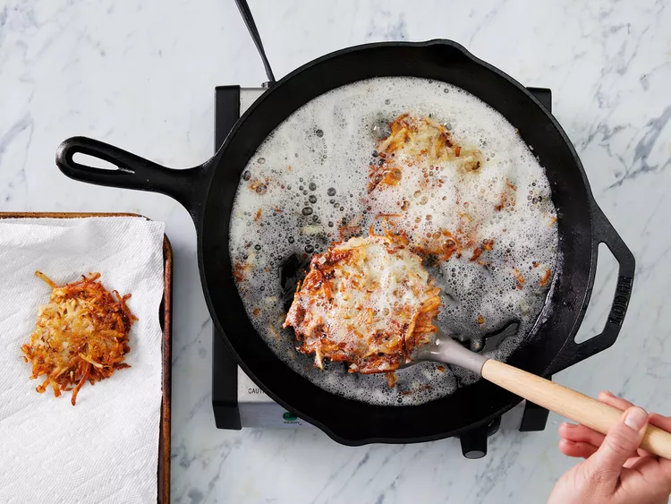

Mix cucumbers, onion, and salt together in a bowl. Cover with plastic wrap and let sit for 15 to 30 minutes.
Turn cucumber mixture into a colander set over a bowl or in a sink. Let drain, stirring occasionally, until most of the liquid and salt has drained, 15 to 30 minutes. Transfer drained cucumber mixture to a large bowl.
Whisk mayonnaise, vinegar, sugar, dill, garlic powder, and pepper for dressing together in a bowl until smooth. Pour over cucumber mixture and stir until
Pour over cucumber mixture and stir until coated.
Cook until nicely browned on the bottom, then flip over and brown on the other side. It should take at least 5 minutes per side. If you are cooking them in one big piece, it can be cut into quarters for easier flipping.
Cover with plastic wrap and refrigerate for 1 to 2 hours before serving.
Enjoy!